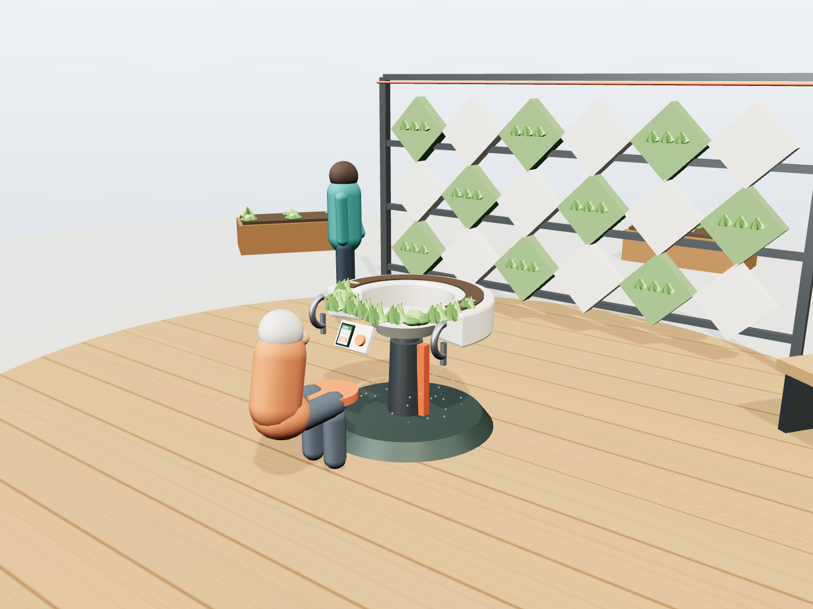
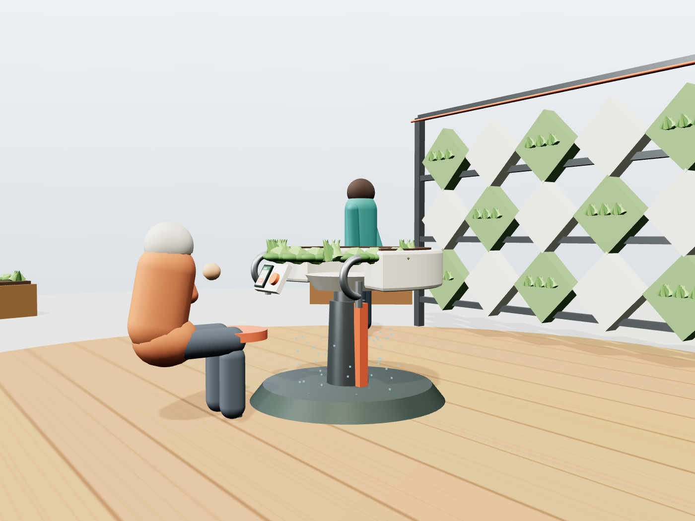
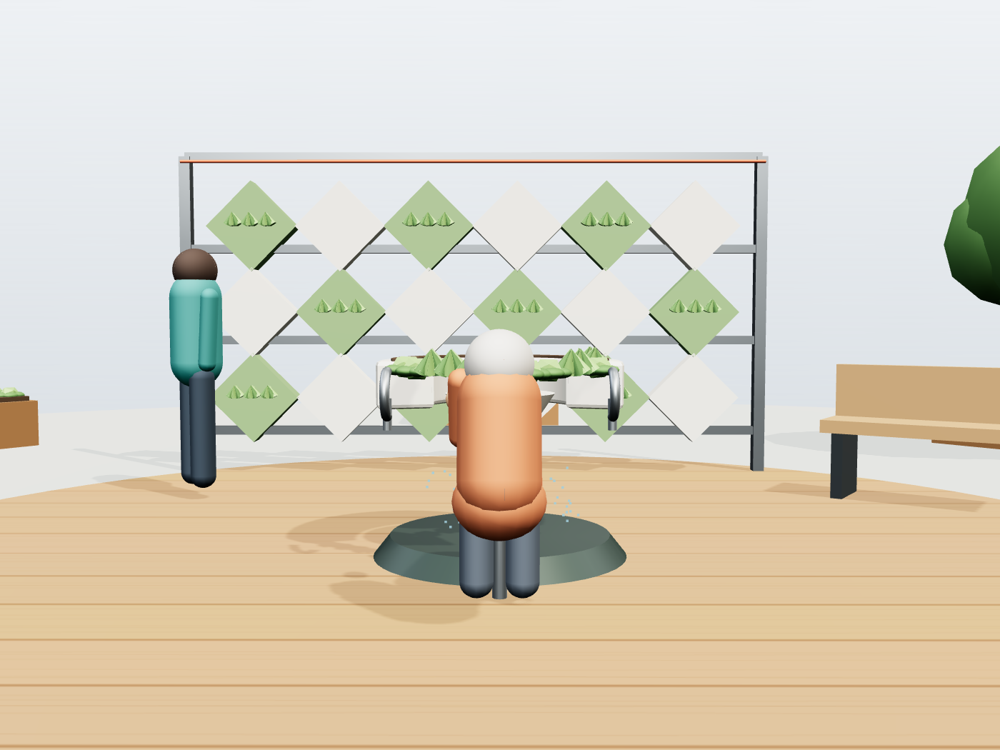
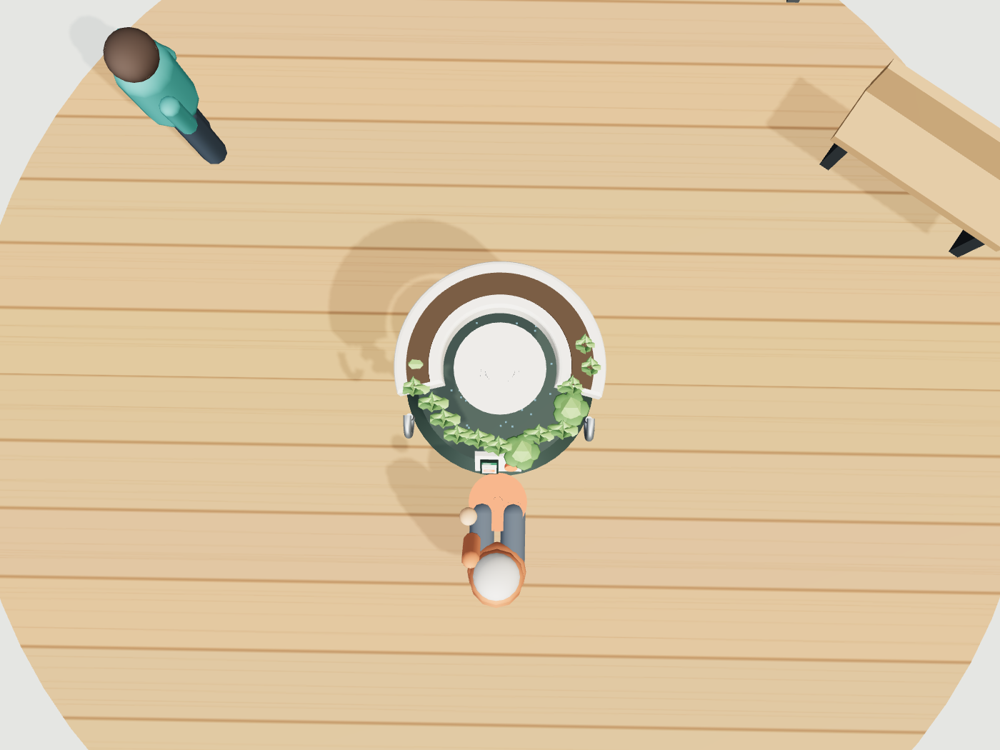

一、3D 模型演示动画
可拖拽旋转 / 缩放。点"播放演示"看完整机构动作：老人靠近 → 自动降台 → 就座照料 → 代际加入 → 模块轮换。
二、核心工业设计产品：可升降模块化种植站
把"物理原理 + 适老价值 + 可落地"同时讲通的那件产品。
电动升降立柱
推杆式升降，台面在 62–100cm 连续可调。靠近自动降台，也可手机 / 大按钮手动，站立、就座、轮椅三档人因高度一键切换。
C 型种植槽
马蹄形开口让使用者的腿与轮椅能探入，坐着就能够到槽体中心—— 免弯腰、免下蹲，这是最朴素也最关键的人因创新。
助力扶手 + 折叠坐垫
两侧弧形扶手提供起身支撑与防跌倒；折叠坐垫让照料变成"坐下来的消遣"而非体力活。
手机操控坞 · 一键呼叫
立柱上集成手机坞与大物理按钮，连接下文的适老 UI；紧急情况一键呼叫邻里 / 志愿者 / 子女。
模块化垂直绿化社交墙
可拆卸铝合金框 + 卡扣几何种植模块，居民季度投票轮换 10% 模块，让空间持续"长出新鲜感"，成为自然的社交催化点。
温暖的适老材料语言
木纹暖色 + 鼠尾草绿 + 米白 + 阳极氧化铝，刻意避开医疗器械的冰冷感，像社区家具而非康复设备。
三、模型渲染图
由同一 3D 模型在"纯净渲染模式"下多角度导出，与演示动画完全对应。




四、老人手机交互 UI
全程最多两步：靠近自动降台 → 手机确认"一件事" → 完成 / 一键求助。
五、设计思路：为什么这样重做
从"贴标签的适老化 + 炫材料"转向"真实人群 + 人因机械 + 社区营造"。
原方案
- "适老化"是标签，内核其实是 AI 平台
- 创新押在热致变色水凝胶窗（搬运论文、与叙事脱节）
- 老人被当成内容生产 / 文化翻译的素材
- UI 20px 小字、积分交易多层级，并不适老
- 大屏像物业数据后台，与老人无关
重做后
- 锁定低龄活力老人，主线是社区营造与意义感
- 创新回到可落地的人因机械：升降 + C 型槽 + 助力
- 老人是被服务的主体，代际协作是真实互惠
- UI 大字、一屏一任务、语音与一键求助兜底
- AI 退为辅助：自动降台、提醒、连接子女